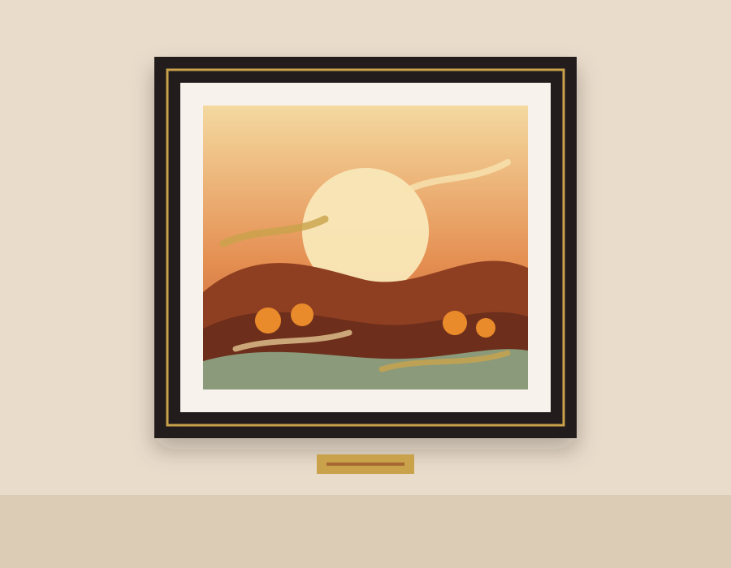
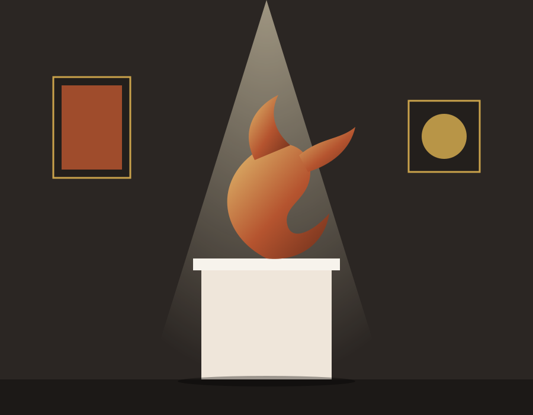

Narenci - Sanat Galerisi & Atölye Platformu
Narenci Işığı
Gün batımının turuncu ışığında yağlıboya bir tarla manzarası. Sergi Salonumuzun en çok ilgi gören resimlerinden biri.
- Teknik
- Tuval üzerine yağlıboya
- Ölçü
- 90 × 70 cm
- Ücret
- 18.500 ₺

Çarkta Seramik: Başlangıç
Kili tanıyın, çarkta ilk vazonuzu şekillendirin. Malzeme ve fırınlama dahil, küçük gruplarla uygulamalı bir atölye.
- Süre
- 8 hafta
- Seviye
- Başlangıç
- Ücret
- 3.200 ₺

Anka
Küllerinden doğan ankayı soyut formlarla anlatan bronz heykel. Kaide ve sertifikası ile birlikte teslim edilir.
- Malzeme
- Bronz
- Yükseklik
- 45 cm
- Ücret
- 32.000 ₺

320
Bugüne Dek Sergilenen Eser
48
Düzenlenen Atölye
26
Sanatçı ve Eğitmen
1250
Kayıtlı Katılımcı
Bir çatı altında üç sanat dalı
Her dalda hem sergilenen eserleri inceleyebilir hem de ilgili atölyeye katılabilirsiniz.
Resim
Yağlı boya, suluboya ve karakalem eserler; başlangıçtan ileri seviyeye resim atölyeleri.
Koleksiyonu gör →Seramik
El yapımı vazolar, tabaklar ve heykelsi formlar; çark ve el şekillendirme kursları.
Koleksiyonu gör →Heykel
Taş, bronz ve çağdaş malzemelerle üretilmiş çalışmalar; modelaj ve kalıp atölyeleri.
Koleksiyonu gör →Büyüyen bir sanat topluluğu
2019'dan bugüne katılımcı sayımız, atölye dağılımımız ve Sergi Salonu'na gösterilen ilgi.
Grafik verilerini tablo olarak göster
| 2019 | 45 |
|---|---|
| 2020 | 110 |
| 2021 | 260 |
| 2022 | 430 |
| 2023 | 690 |
| 2024 | 910 |
| 2025 | 1.090 |
| 2026 | 1.250 |
| Resim | %34 |
|---|---|
| Seramik | %43 |
| Heykel | %23 |
| Oca | 420 |
|---|---|
| Şub | 380 |
| Mar | 510 |
| Nis | 640 |
| May | 720 |
| Haz | 560 |
| Tem | 480 |
| Ağu | 450 |
| Eyl | 690 |
| Eki | 840 |
Duyurular
Sergi açılışları, yeni atölye dönemleri ve etkinliklerden haberdar olun.
Daha Fazla